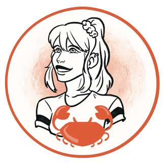

Click to view original version
Click to view updated version
Click to view original repo
Click to view updated repo
Adjustments
What
- Blogpost made through regular WP blogposts
- Functions edited to target new JSON
- Blogposts and images now fetched through regular WP blogposts
Why
I had some struggles with figuring out how to fetch my blogsposts thorugh the JSON material provided when writing regular blogposts, and therefor used WooCommerce to display content instead.
I spent quite a while figuring out how to solve this, but it turned out to be easier once the functions was already in place to swap with the correct JSON details
Cons
Would ideally like to make adjustments to the design, but prioritized JS for now.
Spent a bit too much time figuring out of the JS functions fetch from blogpost, made an impact on other adjustments and assignments